GenAI Arena: An Open Evaluation Platform for Generative Models
Generative AI has made remarkable strides to revolutionize fields such as image and video generation. These advancements are driven by innovative algorithms, architecture, and data. However, the rapid proliferation of generative models has highlighted a critical gap: the absence of trustworthy evaluation metrics. Current automatic assessments such as FID, CLIP, FVD, etc often fail to capture the nuanced quality and user satisfaction associated with generative outputs. This paper proposes an open platform GenAI-Arena to evaluate different image and video generative models, where users can actively participate in evaluating these models. By leveraging collective user feedback and votes, GenAI-Arena aims to provide a more democratic and accurate measure of model performance. It covers three tasks of text-to-image generation, text-to-video generation, and image editing respectively. Currently, we cover a total of 35 open-source generative models. GenAI-Arena has been operating for seven months, amassing over 9000 votes from the community. We describe our platform, analyze the data, and explain the statistical methods for ranking the models. To further promote the research in building model-based evaluation metrics, we release a cleaned version of our preference data for the three tasks, namely GenAI-Bench. We prompt the existing multi-modal models like Gemini, and GPT-4o to mimic human voting. We compute the accuracy by comparing the model voting with the human voting to understand their judging abilities. Our results show existing multimodal models are still lagging in assessing the generated visual content, even the best model GPT-4o only achieves an average accuracy of across the three generative tasks. Open-source MLLMs perform even worse due to the lack of instruction-following and reasoning ability in complex vision scenarios.
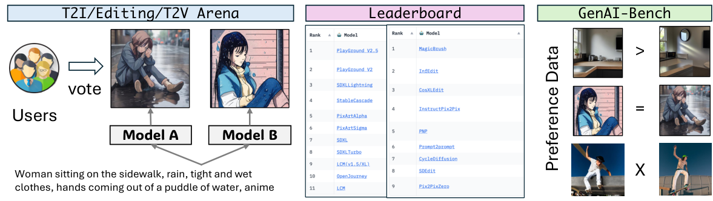
图 1：GenAI Arena 包含三个组成部分：（1）文本到图像、文本到视频与图像编辑竞技场，接受社区投票以获得偏好对；（2）排行榜利用这些偏好对为所有被评测模型计算 Elo 评分；（3）我们进一步发布 GenAI-Bench，用以评判不同的多模态大语言模型评审器。
Image generation and manipulation technologies have seen rapid advancements, leading to their widespread application across various domains such as creating stunning artwork [54, 67, 83, 21], enhancing visual content [6, 44], and aiding in medical imaging [81, 11]. Despite these advancements, navigating through the multitude of available models and assessing their performance remains a challenging task [65]. Traditional evaluation metrics like PSNR, SSIM [76], LPIPS [84], and FID [20], while valuable, offer very specific insights into precise aspects of visual content generation. However, these metrics often fall short in providing a comprehensive assessment of overall model performance, especially when considering subjective qualities like aesthetics and user satisfaction [58].
图像生成与编辑技术发展迅速，已广泛应用于创作精美艺术作品 [54, 67, 83, 21]、增强视觉内容 [6, 44]、辅助医学影像 [81, 11] 等诸多领域。尽管进展显著，在众多可用模型中进行选择并评估其性能仍是一项困难的任务 [65]。PSNR、SSIM [76]、LPIPS [84] 与 FID [20] 等传统评价指标虽有其价值，却只能就视觉内容生成的特定方面给出非常专门的洞察，往往不足以对模型的整体性能作出全面评价，尤其在考虑美学与用户满意度等主观品质时更是如此 [58]。
To address these challenges, we introduce GenAI-Arena—a novel platform designed to enable fair evaluation. Inspired by successful implementations in other domains [86, 53], GenAI-Arena offers a dynamic and interactive platform where users can generate images, compare them side-by-side, and vote for their preferred models. Such a platform not only simplifies the process of comparing different models but also provides a ranking system that reflects human preferences, thereby offering a more holistic evaluation of model capabilities. To our knowledge, GenAI-Arena is the first evaluation platform with comprehensive evaluation capabilities across multiple properties. Unlike other platforms, it supports a wide range of tasks across text-to-image generation, text-guided image editing, and text-to-video generation, along with a public voting process to ensure labeling transparency. The votes are utilized to access the evaluation ability of Multimodal Large Language Model (MLLM) evaluators. Table 1 shows our platform excels in its versatility and transparency.
为应对这些挑战，我们推出 GenAI-Arena——一个用于实现公平评价的全新平台。受其他领域中成功实践的启发 [86, 53]，GenAI-Arena 提供了一个动态交互平台：用户可以生成图像、并排比较并投票选出更偏好的模型。这样的平台既简化了不同模型的比较流程，也提供了反映人类偏好的排序体系，从而对模型能力作出更整体的评价。据我们所知，GenAI-Arena 是首个具备多属性综合评价能力的评价平台。与其他平台不同，它支持文本到图像生成、文本引导图像编辑与文本到视频生成等范围广泛的任务，并采用公开投票流程以保证标注透明性。这些投票还被用于考察多模态大语言模型（MLLM）评审器的评价能力。表 1 显示，本平台在通用性与透明性上具有优势。
Since February 11th, 2024, we have collected over 9000 votes for three multimodal generative tasks. We constructed leaderboards for each task with these votes, identifying the state-of-the-art models as PlayGround V2.5, MagicBrush, and StableVideoDiffusion, respectively (until Oct 24th, 2024). Detailed analyses based on the votes are presented. For example, our plotted winning fraction heatmaps reveal that while the Elo rating system is generally effective, it can be biased by imbalances between "easy games" and "hard games". We also performed several case studies for qualitative analysis, demonstrating that users can provide preference votes from multiple evaluation aspects, which help distinguish subtle differences between the outputs and upload high-quality votes for Elo rating computation.
自 2024 年 2 月 11 日起，我们已为三项多模态生成任务收集了超过 9000 次投票，并基于这些投票为每项任务构建排行榜，评选出的当前最优模型分别为 PlayGround V2.5、MagicBrush 与 StableVideoDiffusion（截至 2024 年 10 月 24 日）。我们给出了基于投票的详细分析：所绘制的胜率热力图显示，Elo 评分系统总体有效，但会被“容易的对局”与“困难的对局”之间的不均衡所带偏。我们还进行了若干案例研究以作定性分析，表明用户可以从多个评价角度给出偏好投票，这有助于区分输出之间的细微差异，并为 Elo 评分计算提交高质量投票。
Automatically assessing the quality of generated visual content is a challenging problem for several reasons: (1) images and videos have many different aspects like visual quality, consistency, alignment, artifacts, etc. Such a multi-faceted nature makes the evaluation intrinsically difficult. (2) the supervised data is relatively scarce on the web. In our work, we release the user voting data as GenAI-Bench to enable further development in this field. Specifically, we calculate the accuracy between different image/video auto-raters (i.e. MLLM judges like GPT-4o, Gemini, etc.) with user preference to understand their judging abilities. Our results show that even the best MLLM, GPT-4o achieves at most accuracy compared with human preference.
自动评价生成视觉内容的质量之所以困难，原因有几点：（1）图像与视频涉及视觉质量、一致性、对齐度、伪影等众多不同方面，这种多面性使评价本身就很困难；（2）网络上的监督数据相对稀缺。在本工作中，我们把用户投票数据以 GenAI-Bench 的形式发布，以推动该领域的进一步发展。具体地，我们计算不同图像/视频自动评分器（即 GPT-4o、Gemini 等 MLLM 评审器）与用户偏好之间的准确率，以了解它们的评判能力。我们的结果表明，即便是最好的 MLLM——GPT-4o，与人类偏好相比也最多只能达到 的准确率。
表 1：与不同评价平台在各属性上的比较。
| Platform |
|
|
|
|
|
| ||||||||||||
|---|---|---|---|---|---|---|---|---|---|---|---|---|---|---|---|---|---|---|
| T2I-CompBench [24] | ✓ | ✗ | ✗ | ✗ | ✗ | ✗ | ||||||||||||
| HEIM [38] | ✓ | ✗ | ✗ | ✓ | ✗ | ✗ | ||||||||||||
| ImagenHub [32] | ✓ | ✓ | ✗ | ✓ | ✗ | ✗ | ||||||||||||
| VBench [25] | ✗ | ✗ | ✓ | ✓ | ✗ | ✗ | ||||||||||||
| EvalCrafter [50] | ✗ | ✗ | ✓ | ✓ | ✗ | ✗ | ||||||||||||
| GenAI-Arena | ✓ | ✓ | ✓ | ✓ | ✓ | ✓ |
To summarize, our work’s contributions include:
综上，本工作的贡献包括：
GenAI-Arena, the first open platform to rank multi-modal generative AI based on user preferences.
• GenAI-Arena：首个基于用户偏好对多模态生成式 AI 进行排序的开放平台。
Discussion and case studies of collected user votes, showing the reliability of GenAI-Arena.
• 对所收集用户投票的讨论与案例研究，展示了 GenAI-Arena 的可靠性。
GenAI-Bench, a public benchmark for judging MLLM’s evaluation ability for generative tasks.
• GenAI-Bench：用于评判 MLLM 在生成任务上评价能力的公开基准。
Numerous methods have been proposed to evaluate the performance of multi-modal generative models in various aspects. In the context of image generation, CLIPScore [19] is proposed to measure the text-alignment of an image and a text through computing the cosine similarity of the two embeddings from CLIP [64]. IS [68] and FID [20] measure image fidelity by computing a distance function between real and synthesized data distributions. PSNR, SSIM [76] assess the image similarity. LPIPS [84] and the follow-up works [15, 16] measure the perceptual similarity of images. More recent works leverage the Multimodal Large Language Model (MLLM) as a judge. T2I-CompBench [24] proposed the use of miniGPT4 [87] to evaluate compositional text-to-image generation task. TIFA [23] further adapted visual question answering to compute scores for the text-to-image generation task. VIEScore [31] leveraged MLLMs as a unified metric across image generation and editing tasks, reporting that MLLM has great potential in replacing human judges.
已有大量方法被提出，用于从各个方面评价多模态生成模型的性能。在图像生成方面，CLIPScore [19] 通过计算 CLIP [64] 中图像与文本两个嵌入的余弦相似度来度量图像的文本对齐度；IS [68] 与 FID [20] 通过计算真实数据与合成数据分布之间的距离函数来度量图像保真度；PSNR、SSIM [76] 评估图像相似度；LPIPS [84] 及其后续工作 [15, 16] 度量图像的感知相似度。更近期的工作则把多模态大语言模型（MLLM）作为评审器：T2I-CompBench [24] 提出使用 miniGPT4 [87] 评价组合式文本到图像生成任务；TIFA [23] 进一步改造视觉问答来计算文本到图像生成任务的分数；VIEScore [31] 把 MLLM 用作跨图像生成与编辑任务的统一指标，并报告 MLLM 在替代人类评审方面具有很大潜力。
Metrics in similar fashions are also proposed for the video domain. For example, FVD [72] measures the coherence shifts and quality in frames. CLIPSIM [64] utilizes an image-text similarity model to assess the similarity between video frames and text. VBench [25] and EvalCrafter [50] also proposed different metrics for evaluating different aspects of the video generation task. However, these automatic metrics still lag compared with human preferences, achieving low correlation and thus giving doubts to their reliability.
视频领域也提出了形式相近的指标：FVD [72] 度量帧间的连贯性偏移与质量；CLIPSIM [64] 利用图文相似度模型评估视频帧与文本的相似度；VBench [25] 与 EvalCrafter [50] 也为评价视频生成任务的不同方面提出了各自的指标。然而，这些自动指标相较人类偏好仍有差距，相关性偏低，其可靠性因此受到质疑。
While auto-metric focuses on evaluating a single model’s performance, evaluation platforms aim to systematically rank a group of models. Recently, several benchmark suites have been developed to comprehensively assess generative AI models. For image generation, T2ICompBench [24] evaluates compositional text-to-image generation tasks, while HEIM [38] offers a holistic evaluation framework that measures text-to-image tasks across multiple dimensions, including safety and toxicity. Similarly, ImagenHub [32] evaluates text-to-image, image editing, and other prevalent image generation tasks in a unified benchmark suite. For video generation, VBench [25] and EvalCrafter [50] provide structured evaluation approaches ensuring rigorous assessment. Despite their functionality, these benchmarks rely on model-based evaluation metrics, which are less reliable than human evaluation.
自动指标侧重于评价单个模型的性能，评价平台则旨在对一组模型进行系统化排序。近期已出现若干基准套件，用于综合评估生成式 AI 模型。在图像生成方面，T2ICompBench [24] 评价组合式文本到图像生成任务，HEIM [38] 提供了一个整体评价框架，从安全性与毒性等多个维度衡量文本到图像任务；类似地，ImagenHub [32] 在统一基准套件中评价文本到图像、图像编辑及其他主流图像生成任务。在视频生成方面，VBench [25] 与 EvalCrafter [50] 提供了结构化的评价方法，保证评估的严谨性。尽管功能齐备，这些基准都依赖基于模型的评价指标，其可靠性不如人工评价。
To address this issue, variable model arenas have been developed to collect direct human preferences for ranking models. Chatbot Arena by LMsys [13] is the pioneering platform in this regard, setting the standard for evaluation. Subsequent efforts have led to the creation of arenas for vision-language models [78], TTS models [53], and tokenizers [28]. However, there is no existing arena for generative AI models. To fill this gap, we propose GenAI-Arena as a complementary solution in this field.
为解决这一问题，各类模型竞技场应运而生，直接收集人类偏好以对模型排序。LMsys 的 Chatbot Arena [13] 是该方向的开创性平台，树立了评价标杆；此后又陆续出现了面向视觉-语言模型 [78]、TTS 模型 [53] 与分词器 [28] 的竞技场。然而，针对生成式 AI 模型的竞技场尚不存在。为填补这一空白，我们提出 GenAI-Arena，作为该领域的补充方案。
图 2：GenAI Arena 用户投票界面。
GenAI-Arena is designed to offer an intuitive and comprehensive evaluation platform for generative models, facilitating user interaction and participation. The platform is structured around three primary tasks: text-to-image generation, image edition, and text-to-video generation. Each task is supported by a set of features that include an anonymous and a non-anonyumous battle playground, a direct generation tab, and a leaderboard as shown in Figure 2 . These features are designed to cater to both casual users and researchers, ensuring a democratic and accurate assessment of model performance.
GenAI-Arena 旨在为生成模型提供一个直观而全面的评价平台，促进用户交互与参与。平台围绕三项主要任务构建：文本到图像生成、图像编辑与文本到视频生成。每项任务都配有一组功能，如图 2 所示，包括匿名与非匿名对战区、直接生成标签页以及排行榜。这些功能同时兼顾普通用户与研究者的需求，以保证模型性能评价的民主性与准确性。
To ensure a fair comparison between different models, we ported the highly dispersed codebase from the existing works and then standardized them into a unified format. During inference, we fixed the hyper-parameters and the prompt format to prevent per-instance prompt or hyper-parameter tuning, which makes the inference of different models fair and reproducible. Following ImagenHub [32], we build the new library of VideoGenHub (details in subsection A.5), which aims to standardize the inference procedure for different text-to-video and image-to-video models. We find the best hyper-parameters of these models to ensure their highest performance.
为保证不同模型之间的公平比较，我们把已有工作中高度分散的代码库移植过来，并统一为标准格式。推理时固定超参数与提示词格式，避免针对单个样本进行提示词或超参数调优，从而使不同模型的推理公平且可复现。沿用 ImagenHub [32]，我们构建了新库 VideoGenHub（详见 A.5 小节），旨在规范不同文本到视频与图像到视频模型的推理流程；我们为这些模型寻找最优超参数，以确保其达到最高性能。
The anonymous battle section is designed to ensure unbiased voting and accurate evaluation of generative models. The rules for this section are as follows:
匿名对战区旨在保证投票无偏、评价准确。该区的规则如下：
Users input a prompt, which is then used to generate outputs from two anonymous models within the same category of task.
1. 用户输入提示词，系统用该提示词在同一任务类别下的两个匿名模型中生成输出。
The generated outputs from the two anonymous models are presented side-by-side for comparison.
2. 两个匿名模型的生成输出并排呈现以供比较。
Users can vote based on their preference using the options: 1) left is better; 2) right is better; 3) tie; 4) both are bad. These four options are being used to calculate Elo ranking.
3. 用户可按偏好投票，选项为：1）左侧更好；2）右侧更好；3）平局；4）两者都差。这四个选项被用于计算 Elo 评分。
Once the user has made their decision, they click the Vote button to submit their vote. It is important to ensure that the identity of the models remains anonymous throughout the process. Votes will not be counted if the model identity is revealed during the interaction.
4. 用户做出决定后，点击 Vote 按钮提交投票。整个过程中必须确保模型身份保持匿名；若交互中暴露了模型身份，该投票将不予计入。
In GenAI-Arena, we incorporate a diverse array of state-of-the-art generative models, covering a broad range of generative tasks including text-to-image generation, image edition, and text-to-video generation. To ensure comprehensive evaluations, the platform includes models that employ diverse underlying technologies, such as different types of architectures, training paradigms, training data and acceleration techniques. These variations can offer insights to understand these factors rigorously.
在 GenAI-Arena 中，我们纳入了多样化的前沿生成模型，覆盖文本到图像生成、图像编辑与文本到视频生成等广泛的生成任务。为保证评价全面，平台所收录的模型采用不同的底层技术，包括不同类型的架构、训练范式、训练数据与加速技术。这些差异有助于我们严格地理解各因素的作用。
In Table 2, we list all the included text-to-image generation models. For example, SDXL, SDXL-Turbo, and SDXL-Lightning are all derived based on SDXL [63], while SDXL-Turbo [69] and SDXL-Lightning [47] adopt different distillation method. We also include diffusion transformer models [60] like PixArt- and PixArt-. Playground V2 and Playground V2.5 are based on SDXL architecture, but trained by Playground.ai from scratch with an internal dataset. We have also included the latest released HunyuanDiT [45], FLUX.1-dev [35], FLUX.1-schnell [35].
表 2 列出了所有纳入的文本到图像生成模型。例如，SDXL、SDXL-Turbo 与 SDXL-Lightning 均基于 SDXL [63] 派生而来，而 SDXL-Turbo [69] 与 SDXL-Lightning [47] 采用了不同的蒸馏方法；我们还纳入了 PixArt- 与 PixArt- 等扩散 Transformer 模型 [60]。Playground V2 与 Playground V2.5 基于 SDXL 架构，但由 Playground.ai 使用内部数据集从零训练。我们还纳入了最新发布的 HunyuanDiT [45]、FLUX.1-dev [35] 与 FLUX.1-schnell [35]。
表 2：所有文本到图像生成模型概览。
| Model | Size | Method | Resolution | #Steps |
|---|---|---|---|---|
| OpenJourney [57] | 1B | SD-2.1 + MidJourney Dataset | 512x512 | 50 |
| LCM [51] | 1B | SD-2.1 + Consistency Distillation | 512x512 | 4 |
| SDXL [63] | 3.5B | Latent Diffusion Model (LDM) | 1K1K | 50 |
| SDXL-Turbo [69] | 3.5B | LDM + Distillation | 1K1K | 1 |
| SDXL-Lightning [47] | 3.5B | LDM + Distillation | 1K1K | 4 |
| PixArt- [9] | 0.6B | Diffusion Transformer (DiT) | 1K1K | 50 |
| PixArt- [10] | 0.6B | DiT + Weak-to-Strong | 4K4K | 50 |
| StableCascade [62] | 1.5B + 3.6B | Würstchen | 1K1K | 20+10 |
| Playground V2 [42] | 3.5B | LDM | 1K1K | 50 |
| Playground V2.5 [41] | 3.5B | LDM | 1K1K | 50 |
| FLUX.1-dev [35] | 12B | Guidance-distilled DiT + Flow Matching | 1K1K | 20 |
| FLUX.1-schnell [35] | 12B | Timestep-distilled DiT + Flow Matching | 1K1K | 4 |
| Kolors [33] | 2.6B | LDM + ChatGLM3 | 1K1K | 50 |
| HunyuanDiT [45] | 1.5B | DiT + multilingual text encoder | 1K1K | 50 |
| Stable Diffusion 3 [70] | 8B | Multimodal DiT | 1K1K | 50 |
| AuraFlow [14] | 6.8B | Flow-based Model | 1K1K | 50 |
表 3：所有图像编辑模型概览。
| Model | Trained? | Method | Runtime |
|---|---|---|---|
| Pix2PixZero [59] | Zero-shot | Editing Direction Discovery + Attention Control | 21s |
| SDEdit [52] | Zero-shot | Iteratively Denoising through SDE | 13s |
| CycleDiffusion [77] | Zero-shot | Reconstructable Encoder for Stochastic DPMs | 9s |
| Prompt2Prompt [18] | Zero-shot | Prompt-based Cross-attention Control | 120s |
| PnP [71] | Zero-shot | Feature and Self-attention Injection | 120s |
| InfEdit [79] | Zero-shot | Consistent Model + Uni-Attention Control | 5s |
| InstructPix2Pix [6] | Trained | Instruction-based Fine-tuning with Synthetic Data | 12s |
| MagicBrush [82] | Trained | Instruction-based Fine-tuning with Annotated Data | 12s |
| CosXLEdit [1] | Trained | Cosine-Continuous EDM VPred schedule | 50s |
表 4：所有文本到视频生成模型概览。
| Model | Base | Len | FPS | Dataset | Resolution | #Steps |
|---|---|---|---|---|---|---|
| AnimateDiff [17] | SD-1.5 | 2s | 8 | WebVid10M | 512512 | 25 |
| AnimateDiff-Turbo [17] | SD-1.5 | 2s | 8 | WebVid10M | 512512 | 4 |
| ModelScope [73] | SD-1.5 | 2s | 8 | WebVid10M | 256256 | 50 |
| LaVie [75] | SD-1.5 | 2s | 8 | Vimeo25M | 320512 | 50 |
| StableVideoDiffusion [4] | SD-2.1 | 2.5s | 10 | LVD-500M | 5761024 | 20 |
| VideoCrafter2 [8] | SD-2.1 | 2s | 16 | WebVid10M | 320512 | 50 |
| T2V-Turbo [43] | VideoCrafter2 | 2s | 8 | WebVid10M | 320512 | 4 |
| OpenSora [55] | Pixart- | 2s | 16 | WebVid10M | 320512 | 50 |
| OpenSora v1.2 [55] | Pixart- | 2s | 16 | WebVid10M | 320512 | 50 |
| CogVideoX-2B [80] | DiT | 2s | 8 | 35M videos + 2B images | 480720 | 50 |
In Table 3, we list all the image editing models and approaches. Some of them are plug-and-play approaches without requiring any training, like Pix2PixZero [59], InfEdit [79], SDEdit [52], etc. These methods can be applied to a broad range of diffusion models. Some of the models like PnP [71] and Prompt2Prompt [18] require DDIM inversion, which takes much longer time than the other approaches. We also include specialized trained image editing models like InstructP2P [6], MagicBrush [82] and CosXLEdit [1].
表 3 列出了所有图像编辑模型与方法。其中一部分是无需训练、即插即用的方法，如 Pix2PixZero [59]、InfEdit [79]、SDEdit [52] 等，可应用于范围广泛的扩散模型；PnP [71] 与 Prompt2Prompt [18] 等模型需要 DDIM 反演，耗时远高于其他方法；我们还纳入了经过专门训练的图像编辑模型，如 InstructP2P [6]、MagicBrush [82] 与 CosXLEdit [1]。
In Table 4, we list all the text-to-video generation models. We include different types of models. For example, AnimateDiff [17], ModelScope [73], Lavie [75] are initialized from SD-1.5 and continue trained by injecting a motion layer to capture the temporal relation between frames. In contrast, StableVideoDiffusion [4] and VideoCrafter2 [7] are iniialized from SD-2.1. Besides these models, we also include OpenSora [55], which utilizes a Sora-like diffusion transformer [60] architecture for joint space-time attention.
表 4 列出了所有文本到视频生成模型，涵盖不同类型的模型。例如，AnimateDiff [17]、ModelScope [73] 与 Lavie [75] 均从 SD-1.5 初始化，并通过注入运动层继续训练，以捕捉帧间的时序关系；相比之下，StableVideoDiffusion [4] 与 VideoCrafter2 [7] 从 SD-2.1 初始化。此外，我们还纳入了 OpenSora [55]，它采用类 Sora 的扩散 Transformer [60] 架构以实现时空联合注意力。
The Elo rating system models the probability of player winning against player , based on their current ratings, and respectively, where . We define a binary outcome for each comparison between player and player , where if player wins and otherwise. The logistic probability is formulated as:
Elo 评分系统基于选手 与 当前的评分 与 （其中 ）建模前者战胜后者的概率。我们定义二元结果 ，用于选手 与 之间的每次比较： 表示选手 获胜， 表示其他情况。逻辑斯谛概率的形式为：
| (1) |
where for Elo rating computation. After each match, a player’s rating is updated using the formula:
其中 用于 Elo 评分计算。每场比赛结束后，选手的评分按以下公式更新：
| (2) |
where is the actual match outcome, for a win for a tie, and for a loss, and . K is
其中 为实际比赛结果， 表示胜， 表示平， 表示负，且 。K 为
For example, given a model’s Elo rating as 1200 and the other model’s elo rating as 1100, then the estimated probability of the first model winning will be . In this way, we can have a direct understanding of the elo rating’s meaning. This mapping from absolute number to the pairwise winning rate of two models gives a more straightforward understanding of the meaning of elo rating score.
例如，若某模型的 Elo 评分为 1200，另一模型的 elo 评分为 1100，则第一个模型获胜的估计概率为 。由此我们可以直接理解 elo 评分的含义：这种从绝对数值到两个模型两两胜率的映射，使 elo 评分的含义更加直观。
Another design logic behind the Elo rating is that a higher-rated player should gain fewer points if they win a lower-rated player, but lose more if they lose the game, whereas the lower-rated player experiences the opposite. In this way, the order of a specific set of matches will significantly affect the final computed Elo rating, as the player’s Elo rating and the rating gain of each match are both changing dynamically. This online Elo rating system might be good for real-world competitions, where players usually have less than 100 competitions a year. However the arena for AI models usually comes with thousands of votes (competitions), and the quality of votes is not ensured. Thus, it’s necessary to acquire an order-consistent and more stable elo rating. To do this, we follow Chatbot Arena [12] to adopt the Bradley–Terry model [5] for a statistically estimated elo rating.
Elo 评分的另一条设计逻辑是：高评分选手战胜低评分选手时得分更少，落败时失分更多；低评分选手则相反。这样一来，一系列比赛的先后顺序会显著影响最终计算出的 Elo 评分，因为选手的 Elo 评分与每场比赛的得分变动都是动态变化的。这种在线 Elo 评分系统适用于现实世界的竞赛——选手一年的比赛通常不足 100 场；然而面向 AI 模型的竞技场往往有数千次投票（比赛），且投票质量无法保证。因此，有必要获得一种顺序无关、更为稳定的 elo 评分。为此，我们沿用 Chatbot Arena [12]，采用 Bradley–Terry 模型 [5] 进行统计估计得到 elo 评分。
The Bradley–Terry (BT) model [5] estimates Elo ratings using logistic regression and maximum likelihood estimation (MLE). Suppose there are players and we have a series of pairwise comparisons, where is the number of times player has won against player . The log-likelihood function for all pairwise comparisons is written as:
Bradley–Terry（BT）模型 [5] 通过逻辑斯谛回归与极大似然估计（MLE）来估计 Elo 评分。设有 名选手，并有一系列两两比较，其中 表示选手 战胜选手 的次数。所有两两比较的对数似然函数写为：
| (3) |
where represents the Elo ratings of each player. The Bradley–Terry model provides a stable statistical estimation of the players’ ratings by consistently incorporating all pairwise comparisons, thus overcoming the limitations of direct Elo computation in online settings.
其中 表示各选手的 Elo 评分。Bradley–Terry 模型通过一致地纳入所有两两比较，给出对选手评分的稳定统计估计，从而克服了在线场景下直接计算 Elo 的局限。
Since the BT model does not account for ties, we first duplicate all the votes, then allocate half of the "tie" votes to the scenario where model wins () and the other half to the scenario where model wins () in practice. We model the solver to be a logistic regression model and solve it via the LogisticRegression model from sklearn for the solving.
由于 BT 模型不考虑平局，我们在实践中先把所有投票复制一份，然后把“平局”票的一半分配给模型 获胜的情形（），另一半分配给模型 获胜的情形（）。我们把求解器建模为逻辑斯谛回归模型，并借助 sklearn 的 LogisticRegression 模型求解。
To further investigate the variance of the estimated Elo rating, we use the "sandwich" standard errors described in Huber et al. [26]. That is, for each round, we record the estimated Elo rating based on the same number of battles sampled from the previous round. This process continues for 100 rounds. We select the lowest sampled elo rating as the lower bound of the confidence interval, and the highest sampled elo rating as the upper bound of the elo rating.
为进一步考察所估计 Elo 评分的方差，我们采用 Huber 等 [26] 描述的“三明治”标准误。具体地，每一轮我们基于从上一轮采样出的相同数量的对战记录来估计 Elo 评分，该过程持续 100 轮。我们取采样得到的最低 elo 评分作为置信区间下界，最高 elo 评分作为其上界。
With a limited number of games, choosing which two players to match up is a crucial issue. The simplest approach, which we currently use, is to randomly select two players. However, this can introduce bias, with some models getting significantly more matches than others. A vote-aware selection system that increases the probability of selecting less-played models and lowers it for more-played ones is needed, and we plan to explore this in future Arena improvements.
在比赛数量有限的情况下，选择哪两名选手对决是一个关键问题。我们目前采用最简单的做法：随机选择两名选手。但这会引入偏差，某些模型获得的对局数会明显多于其他模型。我们需要一种投票感知的选择机制——提高被选中次数较少的模型被选中的概率、降低次数较多模型的概率——并计划在未来的 Arena 改进中探索这一方向。
Current GenAI-Arena runs the model on the Hugging Face Zero GPU system [27]. As shown in Table 3, the time for a single generative inference usually ranges from 5 to 120 seconds. Unlike the auto-regression language model, where inference acceleration techniques like VLLM [34], SGLang [85] generate responses in less than a second, diffusion model community does not have such powerful infrastructure. Therefore, pre-computation becomes a necessary way to mitigate computational overhead and streamline user interaction.
当前 GenAI-Arena 在 Hugging Face Zero GPU 系统 [27] 上运行模型。如表 3 所示，单次生成推理的耗时通常在 5 到 120 秒之间。与自回归语言模型不同——后者有 VLLM [34]、SGLang [85] 等推理加速技术，可在不到一秒内生成回复——扩散模型社区尚无如此强大的基础设施。因此，预计算成为降低计算开销、简化用户交互的必要手段。
To achieve this, we serve GenAI-Museum as a pre-computed data pool comprising various inputs from existing datasets or user collection, along with each model’s output. Based on this, a "Random Sample" button shown in Figure 2 is additionally implemented to facilitate the random generation of prompts and the immediate retrieval of corresponding images or videos. This functionality operates by sending requests to our deployed GenAI-Museum every time "Random Sample" button is hit, receiving input and two random model’s pre-computed outputs. In this way, we save the computation time on the GPU, enable users to do instant comparisons and votes on the UI, and balance the votes for each unique input so we gradually collect votes for a full combination of all models. The input prompts were sampled from ImagenHub [32] and VBench [25]. To prevent the bias in the prompt distribution, we also periodically update the input prompts with the lastest collected real-world human votes. We make sure every prompt is filtered via NSFW detector before adding them.
为此，我们把 GenAI-Museum 作为一个预计算数据池提供服务，其中包含来自现有数据集或用户收集的各种输入，以及每个模型的输出。在此基础上，我们额外实现了图 2 所示的“Random Sample”按钮，以便随机生成提示词并即时检索对应的图像或视频。其工作方式是：每次点击“Random Sample”按钮时，向已部署的 GenAI-Museum 发送请求，获取输入与两个随机模型的预计算输出。这样既节省了 GPU 上的计算时间，使用户能在界面上即时比较与投票，也平衡了每个唯一输入上的投票数，从而逐步收集到覆盖全部模型组合的投票。输入提示词采样自 ImagenHub [32] 与 VBench [25]。为避免提示词分布出现偏置，我们还定期用最新收集的真实用户投票更新输入提示词，并确保每条提示词在加入前都经过 NSFW 检测器过滤。
We report our leaderboard at the time of paper publishing in Table 5. For image generation, we collected 6300 votes in total. The currently top-1 model is Playground V2.5, released by Playground.ai, which follows the same architecture as SDXL but is trained with a private dataset. In contrast, SDXL only ranks in the thirteenth position, lagging significantly behind. Such finding highlights the importance of the training dataset. StableCascade is ranked in the sixth place in the leaderboard, which utilizes a highly efficient cascade architecture to lower the training cost. According to Würstchen [62], StableCascade only requires a 10% training cost of SD-2.1, yet it can beat SDXL significantly on our leaderboard. This highlights the importance of the diffusion architecture to achieve strong performance. For image editing, a total of 1154 votes have been collected. MagicBrush, InFEdit, CosXLEdit, and InstructPix2Pix ranked higher as they can perform localized editing on images. PNP preserves the structure with feature injections, thus limiting the edit variety. The older methods such as Prompt-to-Prompt, CycleDiffusion, SDEdit, and Pix2PixZero, frequently result in completely different images during editing despite the high-quality images, which explains the lower ranking of these models. For text-to-video, there is a total of 2024 votes. StableVideoDiffusion leads with the highest Elo score, suggesting it is the most effective model. Close behind, CogVideoX-2B ranks second. The following VideoCrafter2 and AnimateDiff have very close elo scores, showing nearly equivalent capabilities. LaVie, OpenSora, ModelScope, and AnimateDiff-Turbo follow with decreasing scores, indicating progressively lower performance.
我们在表 5 中报告论文发表时的排行榜。在图像生成方面，我们共收集了 6300 次投票，当前排名第一的是 Playground.ai 发布的 Playground V2.5，它沿用与 SDXL 相同的架构，但使用私有数据集训练；相比之下，SDXL 仅排在第十三位，明显落后。这一发现凸显了训练数据集的重要性。StableCascade 位列第六，它采用高效的级联架构以降低训练成本；据 Würstchen [62]，StableCascade 只需 SD-2.1 的 10% 训练成本，却能在我们的排行榜上大幅领先 SDXL，这凸显了扩散架构对实现强劲性能的重要性。在图像编辑方面，我们共收集了 1154 次投票；MagicBrush、InFEdit、CosXLEdit 与 InstructPix2Pix 排名靠前，因为它们能对图像做局部化编辑；PNP 通过特征注入保留结构，从而限制了编辑的多样性；Prompt-to-Prompt、CycleDiffusion、SDEdit 与 Pix2PixZero 等较早的方法尽管能生成高质量图像，却经常在编辑时得到完全不同的图像，这解释了它们排名偏低的原因。在文本到视频方面，共有 2024 次投票；StableVideoDiffusion 以最高的 Elo 分数领先，表明它是最有效的模型；紧随其后的是排名第二的 CogVideoX-2B；再往后的 VideoCrafter2 与 AnimateDiff 的 elo 分数非常接近，能力基本相当；LaVie、OpenSora、ModelScope 与 AnimateDiff-Turbo 依次递减，性能逐步下降。
表 5：GenAI-Arena 排行榜。（最后更新于 2024 年 10 月 24 日）
(a) 文本到图像（前 10 名）
| Model | Elo | 95% CI |
|---|---|---|
| PlayGround V2.5 | 1122 | +19/-20 |
| FLUX.1-dev | 1114 | +45/-42 |
| FLUX.1-schnell | 1085 | +43/-46 |
| Playground V2 | 1072 | +18/-22 |
| Kolors | 1069 | +32/-39 |
| StableCascade | 1057 | +17/-21 |
| HunyuanDiT | 1030 | +25/-27 |
| PixArt- | 1020 | +17/-19 |
| SDXL-Lightning | 1020 | +17/-15 |
| PixArt- | 1019 | +22/-20 |
(b) 图像编辑
| Model | Elo | 95% CI |
|---|---|---|
| MagicBrush | 1108 | +32/-28 |
| InfEdit | 1075 | +26/-32 |
| CosXLEdit | 1066 | +31/-29 |
| InstructPix2Pix | 1038 | +32/-24 |
| PNP | 998 | +35/-34 |
| Prompt2prompt | 988 | +26/-23 |
| CycleDiffusion | 943 | +26/-26 |
| SDEdit | 924 | +24/-23 |
| Pix2PixZero | 858 | +25/-30 |
(c) 文本到视频
| Model | Elo | 95% CI |
|---|---|---|
| StableVideoDiffusion | 1148 | +31/-28 |
| CogVideoX-2B | 1106 | +71/-71 |
| T2V-Turbo | 1085 | +36/-32 |
| VideoCrafter2 | 1068 | +20/-22 |
| AnimateDiff | 1068 | +25/-21 |
| LaVie | 996 | +25/-21 |
| OpenSora | 912 | +23/-23 |
| OpenSora v1.2 | 894 | +54/-71 |
| ModelScope | 862 | +25/-22 |
| AnimateDiff-Turbo | 861 | +22/-20 |
(a) 文本到图像
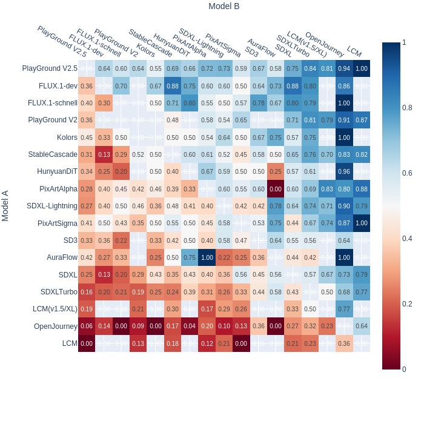
(b) 图像编辑
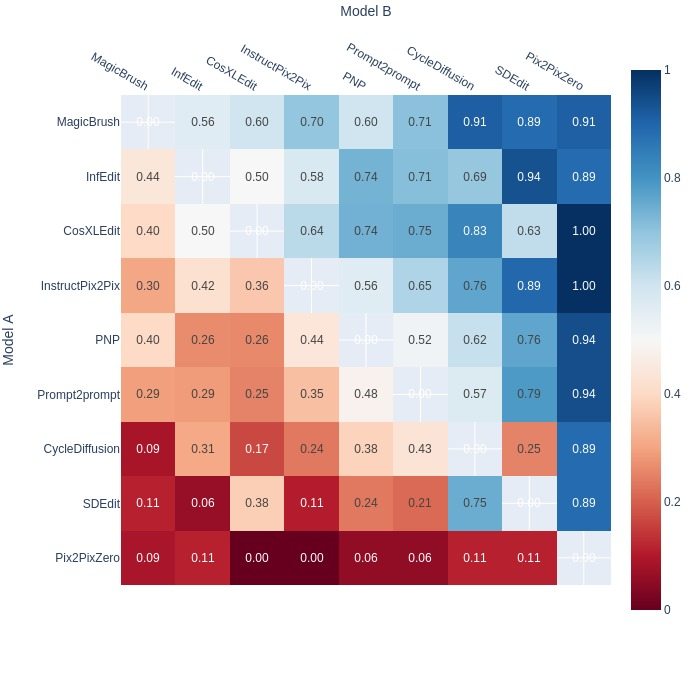
(c) 文本到视频
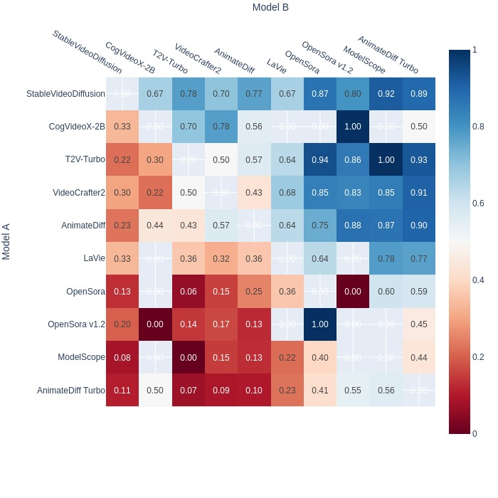
图 3：GenAI-Arena 中三项任务上不同模型的胜率热力图
(d) 文本到图像
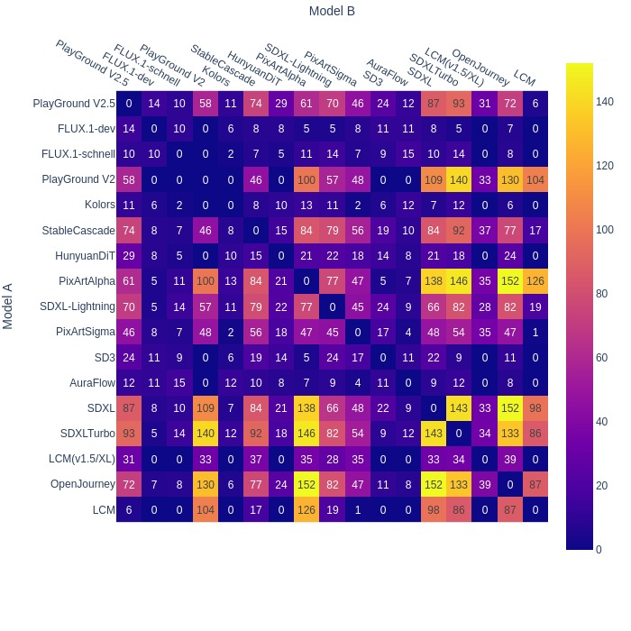
(e) 图像编辑
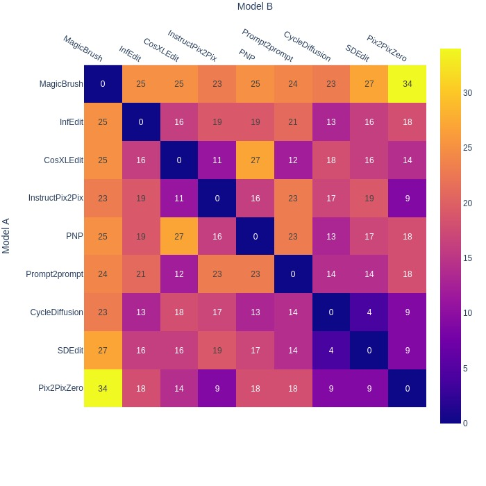
(f) 文本到视频
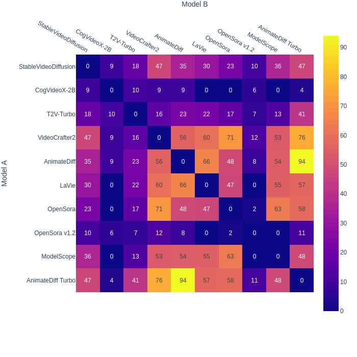
图 4：GenAI-Arena 中三项任务上不同模型的对局数热力图（不含平局）
(a) 文本到图像
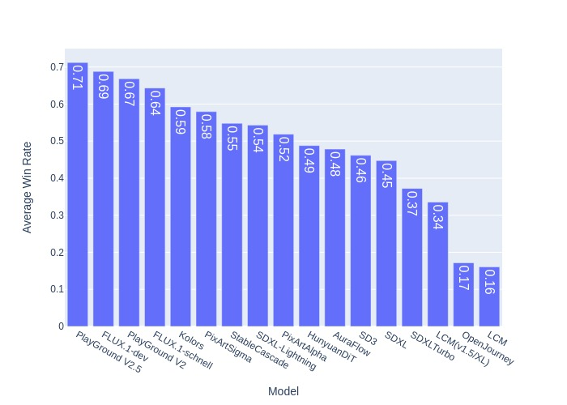
(b) 图像编辑
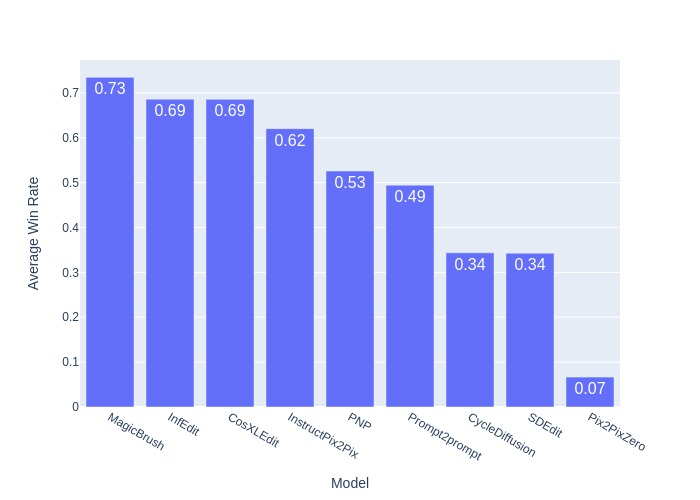
(c) 文本到视频
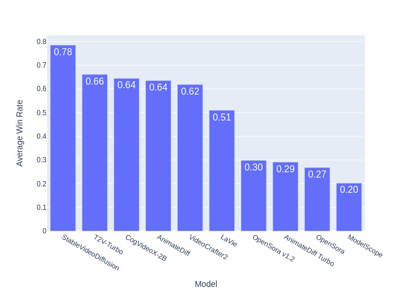
图 5：对所有其他模型的平均胜率（假设均匀采样且无平局）
We visualize the winning fraction heatmap in Figure 5, where each cell represents the actual winning fraction of Model A over Model B. The models are ordered by their Elo rating in the heatmap. Horizontally across each row, the winning fraction of Model A increases as the Elo rating of Model B decreases, demonstrating the effectiveness of the Elo rating system in ranking different models.
我们在图 5 中可视化胜率热力图，其中每个格子表示模型 A 相对模型 B 的实际胜率；热力图中的模型按其 Elo 评分排序。横向看每一行，模型 A 的胜率随模型 B 的 Elo 评分下降而上升，说明 Elo 评分系统在对不同模型排序时是有效的。
Specific cells in the heatmap reveal notable findings. For instance, although PlayGround 2.5 achieves the state-of-the-art (SOTA) Elo rating in the Text-to-Image task, its winning fraction over PixArt- is only , which is below 60%. The higher Elo rating of T2V-Turbo might be due to our Arena collecting more votes from "easy games" with low-ranked models and fewer from "harder games" with high-ranked models. For example, the number of battles between PlayGround V2.5 and SDXL-Turbo () is way more than PlayGround V2.5 with other models (around ) in Figure 5.
热力图中某些格子揭示了不少发现。例如，尽管 PlayGround 2.5 在文本到图像任务上取得了最优（SOTA）的 Elo 评分，它对 PixArt- 的胜率却只有 ，低于 60%。T2V-Turbo 的 Elo 评分偏高，可能是因为我们的 Arena 从与低排名模型的“容易对局”中收集了更多投票，而从与高排名模型的“困难对局”中收集的投票较少。例如，在图 5 中，PlayGround V2.5 与 SDXL-Turbo 之间的对局数（）远多于 PlayGround V2.5 与其他模型之间的对局数（约 ）。
These anomalies highlight potential drawbacks of the Elo rating system: (1) a reliable and robust Elo rating requires a large amount of voting data, and (2) the estimated Elo rating may be biased by the imbalance between "easy games" and "harder games," as they carry similar weight in the estimation.
这些异常凸显了 Elo 评分系统的潜在缺陷：（1）可靠而稳健的 Elo 评分需要大量投票数据；（2）估计出的 Elo 评分可能被“容易对局”与“困难对局”之间的不均衡带偏，因为二者在估计中权重相近。
As shown in Figure 5, we observe that the average win rates of the top-ranked models are all quite similar, none exceeding 80%. This indicates that there is no dominant, highly powerful model in text-to-image, image editing, or text-to-video generation at this time. The community is still awaiting a "ChatGPT moment"—the release of a breakthrough model with transformative capabilities.
如图 5 所示，我们观察到排名靠前模型的平均胜率都相当接近，无一超过 80%。这表明当前在文本到图像、图像编辑与文本到视频生成上都不存在具有压倒性优势的强模型，社区仍在等待一个“ChatGPT 时刻”——一个具备变革性能力的突破性模型问世。
Since our arena users come from different backgrounds and have different preferences, we conduct an expert review on a small set of sampled human vote to ensure there are no severe quality issues of our collected votes. We let different authors review 50 items for each set. A total of 350 items from our GenAI-Bench are evaluated. During the annotations, we skipped those bad items due to NSFW or technical issues, and we finally collected 303 valid evaluations. For each vote, 3 available labels for provided for annotating:
由于我们 Arena 的用户背景各异、偏好不同，我们对一小部分抽样的人类投票进行了专家复核，以确保所收集投票不存在严重质量问题。我们让不同作者各自复核每组 50 条，共评估了 GenAI-Bench 中的 350 条。标注过程中，我们跳过因 NSFW 或技术问题导致的劣质条目，最终收集到 303 条有效评估。每条投票提供 3 个可用标签用于标注：
Clearly Reasonable Vote: This vote will be clearly agreed by most of the people.
• 明显合理的投票：多数人都会明确认同该投票。
Vague Vote: The current vote makes sense. But it’s also reasonable if other vote is selected.
• 模糊的投票：当前投票说得通，但选择其他投票也同样合理。
Wrong Vote: This vote will be clearly disagreed by most of the people.
• 错误的投票：多数人都会明确反对该投票。
表 6：350 条抽样人类投票的专家复核
(a) 有效投票的分布
| # Valid votes | # NSFW | # Tech issue | Total |
|---|---|---|---|
| 303 | 17 | 30 | 350 |
| 86.57% | 4.86% | 8.57% | 100% |
(b) 质量标签的分布
| # Clearly Reasonable Vote | # Vague Vote | # Wrong Vote | Total |
|---|---|---|---|
| 231 | 51 | 21 | 303 |
| 76.24% | 16.83% | 6.93% | 100% |
We report the distribution of valid votes in Table 6, and find that 86.57% of the votes are valid without NSFW issues. Among these valid votes, about 76.24% of the votes are clearly reasonable votes and 93.07% of the votes are either clearly reasonable or vaguely reasonable, as shown in Table 6. We believe this shows the reliability of our preference data.
我们在表 6 中报告有效投票的分布，发现 86.57% 的投票有效、不含 NSFW 问题。在这些有效投票中，约 76.24% 为明显合理的投票，93.07% 为明显合理或模糊合理的投票，如表 6 所示。我们认为这说明我们的偏好数据是可靠的。
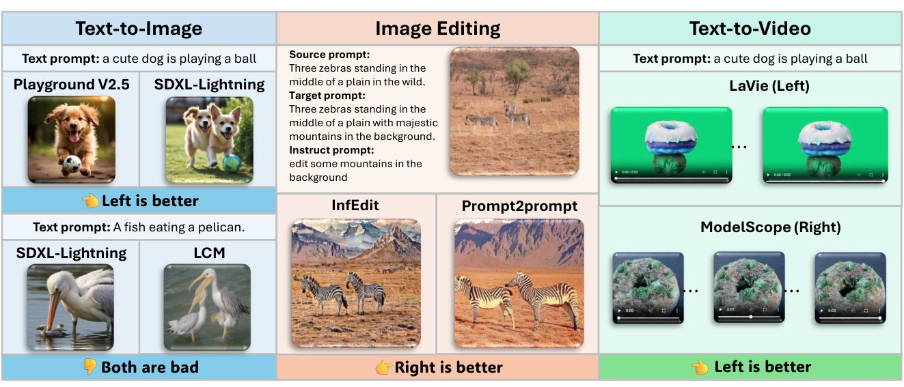
图 6：GenAI-Arena 上三项生成任务的用户投票示例
We present case studies in Figure 6, showcasing the votes collected for three generative tasks. These cases demonstrate that GenAI-Arena users can provide high-quality votes, even for the most advanced models. For instance, in the text-to-image task, the image generated by PlayGround V2.5 was preferred over that of SDXL-Lightning for the prompt "a cute dog is playing with a ball," as the latter depicted two dogs instead of one. Users can clearly distinguish and vote based on the quality of the outputs, even when both models complete the task. In the image editing task, the edited image from Prompt2Prompt appeared more natural than the one from InfEdit, leading users to make a definitive vote. Similarly, votes collected for the text-to-video task were also of high quality.
我们在图 6 中给出案例研究，展示三项生成任务所收集的投票。这些案例表明，GenAI-Arena 的用户能够提供高质量投票，即便面对最先进的模型也是如此。例如在文本到图像任务中，对提示词“一只可爱的狗在玩球”，用户更偏好 PlayGround V2.5 生成的图像而非 SDXL-Lightning 的，因为后者画了两只狗而不是一只。即便两个模型都完成了任务，用户仍能清楚分辨并依据输出质量投票。在图像编辑任务中，Prompt2Prompt 的编辑结果比 InfEdit 的更自然，用户因此投出了明确的票。文本到视频任务上收集的投票同样质量很高。
We applied Llama Guard [29] as an NSFW filter to ensure that the user input prompt is appropriate for a wide range of audiences and protects users of the benchmark from exposure to potentially harmful or offensive content. In the text-to-image generation task, we collect 4.3k anonymous votes in total and there are 1.7k votes left after filtering for the safe content. We observe a large amount of the prompt is filtered out due to sexual content, which takes up 85.6% of the abandoned data. In the text-guided image editing task, we collect 1.1k votes from users before filtering. After applying Llama Guard, there are 0.9k votes for the image edition being released. In this task, 87.5% of the unsafe inputs contain violent crimes, and the other 12.5% is filtered out resulting from sex-related crimes. For text-to-video generation task, our platform collects 1.2k votes before post-processing. After cleaning it with the NSFW filter, we release the remaining 1.1k votes. All of the unsafe data abandoned in this task is due to the sexual content. We released the current version of GenAI-Bench11 1 https://huggingface.co/datasets/TIGER-Lab/GenAI-Bench on the HuggingFace Dataset website, with an MIT license to allow the reuse with or without modification.
我们采用 Llama Guard [29] 作为 NSFW 过滤器，确保用户输入的提示词适合广泛受众，并保护基准使用者免受潜在有害或冒犯性内容的影响。在文本到图像生成任务中，我们共收集 4.3k 条匿名投票，过滤安全内容后剩余 1.7k 条；我们观察到大量提示词因性内容被过滤，占被弃数据的 85.6%。在文本引导图像编辑任务中，过滤前我们从用户处收集了 1.1k 条投票，经 Llama Guard 处理后发布了 0.9k 条图像编辑投票；该任务中 87.5% 的不安全输入涉及暴力犯罪，其余 12.5% 因性相关犯罪被过滤。在文本到视频生成任务中，平台在后处理前收集了 1.2k 条投票，经 NSFW 过滤器清洗后发布剩余的 1.1k 条；该任务中被弃的不安全数据全部源于性内容。我们在 HuggingFace 数据集网站上发布了当前版本的 GenAI-Bench11 1 https://huggingface.co/datasets/TIGER-Lab/GenAI-Bench，采用 MIT 许可，允许在修改或不修改的情况下复用。
To construct the GenAI-Bench leaderboard, we propmt MLLMs to output preference labels of AI generated contents, where templates are defined in subsection A.6. Specifically, We selected MLLMs including GPT-4o [56], Gemini-1.5-Pro [66], Idefics2 [37], etc., and ask them to output 4 labels: “[[A>B]]”, “[[B>A]]”, “[[A=B=Good]]”, and “[[A=B=Bad]]”. We then compare them with actual human preference labels collected through the GenAI-Arena using the exact match metric. As shown in Table 7, open-source model still lag behind close-source MLLMs such as GPT-4o and Gemini, indicating a lack of generalization ability in vision reasoning of open-source MLLMs. We also tried models including Fuyu [3], Kosmos-2 [61], Otter [39], Mantis [30], etc., but found that they cannot follow the instruction well to output reasonable labels.
为构建 GenAI-Bench 排行榜，我们提示 MLLM 输出对 AI 生成内容的偏好标签，所用模板见 A.6 小节。具体地，我们选取了 GPT-4o [56]、Gemini-1.5-Pro [66]、Idefics2 [37] 等 MLLM，要求它们输出 4 个标签：“[[A>B]]”“[[B>A]]”“[[A=B=Good]]”与“[[A=B=Bad]]”，然后用精确匹配指标将其与通过 GenAI-Arena 收集的真实人类偏好标签进行比较。如表 7 所示，开源模型仍落后于 GPT-4o 与 Gemini 等闭源 MLLM，说明开源 MLLM 在视觉推理上缺乏泛化能力。我们还尝试了 Fuyu [3]、Kosmos-2 [61]、Otter [39]、Mantis [30] 等模型，发现它们无法很好地遵循指令以输出合理标签。
表 7：GenAI-Bench 排行榜，通过与人类偏好比较来评测 MLLM 评判 AI 生成内容质量的能力。数值为准确率（%）。
| Model | Image Generation | Image Editing | Video Generation | Average |
|---|---|---|---|---|
| Random | 25.36 | 25.90 | 25.16 | 25.47 |
| Idefics1 [36] | 0.81 | 5.66 | 0.19 | 2.22 |
| InstructBLIP [6] | 3.11 | 19.80 | 3.74 | 8.89 |
| QwenVL [2] | 26.63 | 14.91 | 2.15 | 14.56 |
| CogVLM [74] | 29.34 | 0.00 | 24.60 | 17.98 |
| VideoLLaVA [46] | 37.75 | 26.66 | 0.00 | 21.47 |
| BLIP-2 [40] | 26.34 | 26.01 | 16.93 | 23.09 |
| MiniCPM-V-2.5 [22] | 37.81 | 25.24 | 6.55 | 23.20 |
| LLaVA-1.6-7B [49] | 22.65 | 25.35 | 21.70 | 23.24 |
| Idefics2 [37] | 42.25 | 27.31 | 16.46 | 28.67 |
| LLaVA-1.5-7B [48] | 37.00 | 26.12 | 30.40 | 31.17 |
| Gemini-1.5-Pro [66] | 44.67 | 55.93 | 46.21 | 48.94 |
| GPT-4o [56] | 45.59 | 53.54 | 48.46 | 49.19 |
In this paper, we introduced GenAI-Arena, an open platform designed to rank generative models across text-to-image, image editing, and text-to-video tasks based on user preference. unlike other platforms, GenAI-Arena is driven by community voting to ensure transparency and sustainable operation. We employed the side-by-side human voting method to evaluate the models and collected over 9000 votes starting from February 11th, 2024. We compiled an Elo leaderboard with the votings and found that PlayGround V2.5, MagicBrush, and StableVideoDiffusion are the current state-of-the-art models in the three tasks (until Oct 24th, 2024). Analysis based on the collected votes shows that while the Elo rating is generally functional, but can biased by the imbalance of the "easy games" and "hard games". Our expert review of 350 sampled human votes confirmed that 93.07% of the votes can be viewed as either clearly reasonable or vaguely reasonable, demonstrating the high quality of our collected votes What’s more, we also released the human preference voting as GenAI-Bench. We prompt the existing MLLMs to evaluate the generated images and videos on GenAI-Bench and compute the accuracy with human voting. The experiment showed that the open-source MLLMs achieve very low performance, even the best model GPT-4o can only achieve accuracy. This is mostly because their lack of instruction-following and reasoning ability in complex vision scenarios. In the future, we will continue collecting human votes to update the leaderboard, helping the community to keep track of the research progress. We also plan to develop a more robust MLLM to better approximate human ratings in GenAI-Bench.
本文介绍了 GenAI-Arena，一个基于用户偏好对文本到图像、图像编辑与文本到视频任务上各生成模型排序的开放平台。与其他平台不同，GenAI-Arena 由社区投票驱动，以保证透明性与可持续运营。我们采用并排人工投票的方式评价模型，自 2024 年 2 月 11 日起收集了超过 9000 次投票，并据此编制了 Elo 排行榜，发现 PlayGround V2.5、MagicBrush 与 StableVideoDiffusion 分别是三项任务上的当前最优模型（截至 2024 年 10 月 24 日）。基于所收集投票的分析表明，Elo 评分总体可用，但会被“容易对局”与“困难对局”的不均衡所带偏。我们对 350 条抽样人类投票的专家复核确认，93.07% 的投票可视为明显合理或模糊合理，说明所收集投票质量很高。此外，我们还把人类偏好投票以 GenAI-Bench 的形式发布，提示现有 MLLM 评价 GenAI-Bench 上的生成图像与视频，并与人类投票计算准确率。实验表明，开源 MLLM 表现很差，即便最好的 GPT-4o 也只能达到 的准确率，这主要源于它们在复杂视觉场景中缺乏指令遵循与推理能力。未来我们将继续收集人类投票以更新排行榜，帮助社区追踪研究进展；同时也计划开发更稳健的 MLLM，以在 GenAI-Bench 上更好地逼近人类评分。
The establishment of GenAI-Arena and the release of GenAI-Bench have broader societal implications. By democratizing the evaluation of generative models, GenAI-Arena encourages transparency and community engagement in AI development. This can lead to more trust in AI technologies as the public can gain insights into how models perform according to peer evaluations. Moreover, involving the community in such evaluations can accelerate the identification of potentially harmful biases or unethical uses of AI technologies. However, there are potential risks associated with the widespread use of generative AI technologies that GenAI-Arena evaluates. For instance, advancements in text-to-image and text-to-video generation can be misused for creating misleading or harmful content, such as those filtered by NSFW Filter.
GenAI-Arena 的建立与 GenAI-Bench 的发布具有更广泛的社会意义。通过使生成模型的评价民主化，GenAI-Arena 促进了 AI 开发中的透明性与社区参与；公众得以了解模型在同行评价下的表现，从而增进对 AI 技术的信任。此外，让社区参与此类评价，可以加速识别 AI 技术中潜在的有害偏见或不道德用途。不过，GenAI-Arena 所评价的生成式 AI 技术的广泛使用也带来潜在风险，例如文本到图像与文本到视频生成的进步可能被滥用于制造误导性或有害内容——正是 NSFW 过滤器所过滤的那些内容。
While the release of GenAI-Arena can enable a more reasonable evaluation of the generative models, there are several limitations in its development. First, the diversity and representativeness of the user base participating in GenAI-Arena may not fully encapsulate the broader population’s preferences, which will potentially bias the evaluation results. Despite efforts to attract voters with diverse backgrounds, there is an inherent challenge in ensuring a balanced representation across different cultures or professional backgrounds. In addition, the reliance on user feedback and votes introduces subjectivity into the evaluation process. While this is partially mitigated by the volume of data collected, individual biases and varying levels of expertise among users can skew the results.
尽管 GenAI-Arena 的发布使生成模型的评价更趋合理，其开发过程中仍存在若干局限。第一，参与 GenAI-Arena 的用户群体在多样性与代表性上未必能完整涵盖更广泛人群的偏好，这可能使评价结果产生偏差；尽管我们努力吸引不同背景的投票者，要确保在不同文化或职业背景之间取得均衡代表仍存在固有困难。第二，依赖用户反馈与投票会把主观性引入评价过程；虽然所收集的数据量在一定程度上缓解了这一点，用户个体的偏见与专业水平差异仍可能使结果发生倾斜。
We stated in the GenAI-Arena UI that the input and votes will be collected for research purposes only. By using this GenAI-Arena tool, the users agree to the collection of their input and votes for research purposes. The users are acknowledged that their data will be anonymized and will not be used for commercial purposes.
我们在 GenAI-Arena 界面中声明，输入与投票仅用于研究目的。使用本 GenAI-Arena 工具即表示用户同意我们出于研究目的收集其输入与投票；用户已被告知其数据将被匿名化处理，且不会用于商业目的。
We included more analysis in Figure 7 and 5 to show the reliability of GenAI-Arena. Specifically, Figure 7 shows the error bar of the Elo rating to prove the reliability. For Figure 5, it predicts the average win rate if the model is played against other models.
我们在图 7 与图 5 中加入了更多分析，以展示 GenAI-Arena 的可靠性。具体地，图 7 给出 Elo 评分的误差棒以证明其可靠性；图 5 则预测某模型与其他模型对战时的平均胜率。
(a) 文本到图像
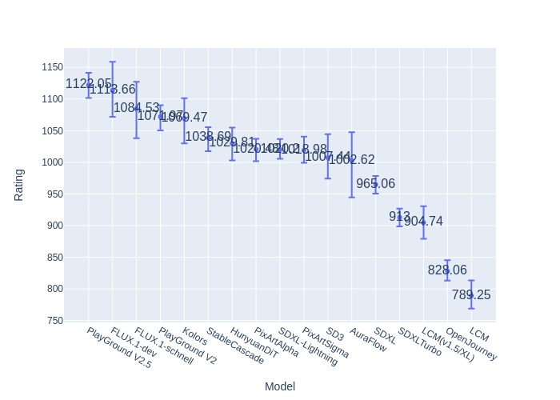
(b) 图像编辑
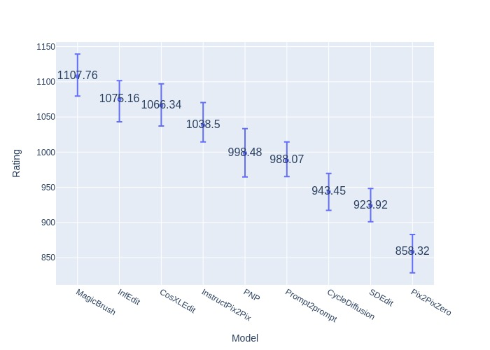
(c) 文本到视频
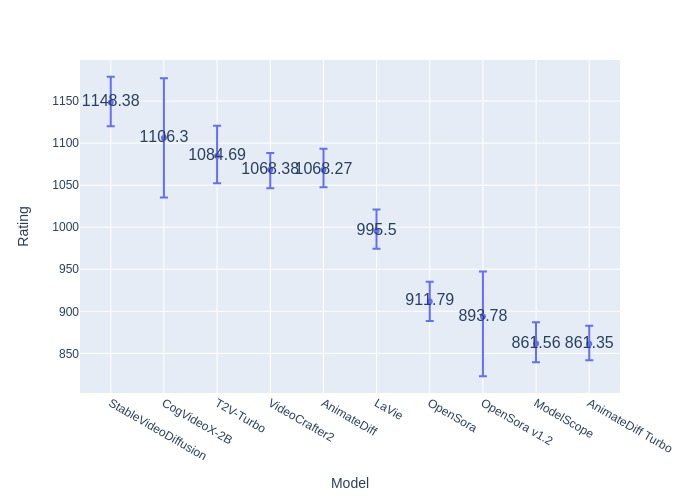
图 7：Elo 估计的自举（1000 轮随机采样）
VideoGenHub is an open-source library to standardize the inference and evaluation of all the conditional video generation models, similar to ImagenHub [32] in the image domain. In the library, all models are implemented with the literature standard, and the seeds are set as 42 for a fair comparison, which is the same standard as ImagenHub [32] implementation.
VideoGenHub 是一个开源库，用于规范所有条件视频生成模型的推理与评价，类似于图像领域的 ImagenHub [32]。库中所有模型均按文献标准实现，并把随机种子设为 42 以保证公平比较，这与 ImagenHub [32] 的实现标准一致。
We provide the prompt templates used to prompt MLLM to output their preferences for the genai bench data in the followings. MLLMs are required to output 4 labels including [[A>B]], [[B>A]], [[A=B=Good]], and [[A=B=Bad]]. Videos are extracted into image frames and fed into them as an image sequence, or directly fed into the model if the model have a specific video processing unit. We then compare their output labels with the real-world users preferences collected from out GenAI-Arena to judge a MLLM’s ability in judging the quality of AI generative contents.
下面给出用于提示 MLLM 对 genai bench 数据输出其偏好的提示词模板。MLLM 需要输出 4 个标签，包括 [[A>B]]、[[B>A]]、[[A=B=Good]] 与 [[A=B=Bad]]。视频被抽取为图像帧，以图像序列的形式输入模型；若模型具有专门的视频处理单元，则直接输入。随后我们把它们的输出标签与从 GenAI-Arena 收集的真实用户偏好进行比较，以评判某个 MLLM 在评价 AI 生成内容质量上的能力。
For text-to-image generation task, the prompt is as follows:
对于文本到图像生成任务，提示词如下：
For image-edition task, the prompt is as follows:
对于图像编辑任务，提示词如下：
For video-generation tasks, the prompt is as follows:
对于视频生成任务，提示词如下：